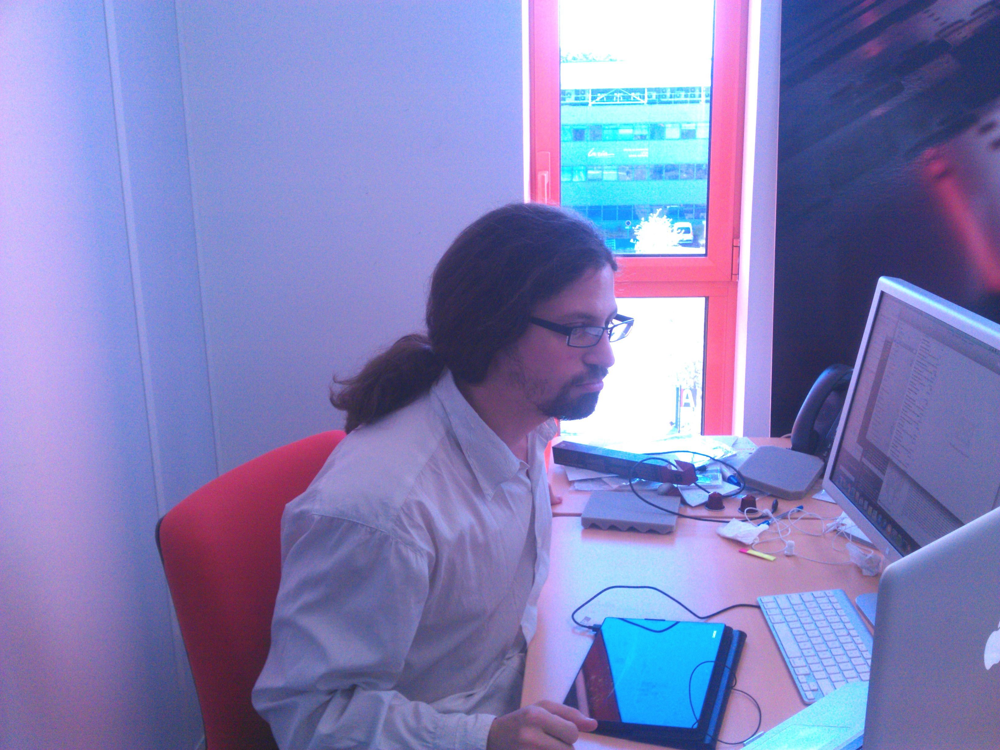

Interview RMoD #4: Jean-Baptiste Arnaud
Interview with Jean-Baptiste Arnaud
This is the fourth post of my series of interviews, in which I interview my colleagues of the RMoD team.
Jean-Baptiste was already part of the team when I arrived, so as far as I'm concerned he's been there forever! He currently shares his office with Damien Pollet, two doors from mine.
He is a fun guy to work with, and he always has something to say about any topic, being work-related or not.

Figure 1: JB at work
Hi Jean-Baptiste, thanks for taking this interview. Can you start by telling me a bit about yourself?
My name is Jean-Baptiste Arnaud, I'm 28 years old. I am in the Pharo community and in the RMoD team since 5 years.
Two years ago I finished a PhD in language design and security, and obviously all of the experiments were done using the Pharo image and virtual machine.
I am now a Post-doc in the RmoD team, still working on different language projects.
When I was young, I wanted to be an inventor. You know like Gyro Gearloose from "Duck Tales". Unfortunately high school do not offer this kind of career. I was always passionnate about "how" things work, this passion can probably explain my strange academic career: two years in Computer science, one year in biological science, two years in management (where I meet Stephane) and then my second master year in computer science with a focus on research. After that I started my PhD in the RMoD team.
I am the annoying guy of the team, the guy talking too much (and I shared my office with the most silent guy of the team).
On the personal side, I am a multi-passion kind of guy with a lot of short term passions and a couple of really long term ones. I like books (art, RPG, comics and real book with only words in it), video games and obviously movies.

Figure 2: Two of JB's toys
What was your experience of the RMoD team as a PhD student?
The first years, you enjoy it a lot: you have a lot to learn, to teach and you can have fun producing nice prototype :-). It was also my first real experience in the scientific world, I wasn't really prepared to do a Phd. So it was a mix of bad and good surprises, but mostly good!
The second year your try to produce papers, in my case that was a pain not from the ideas point of view but for the writing one. I am disorthographic so writing is not really my best skill. Except from that the second year was really cool for my research because I started to have enough knowledge and my research began to be mature.
And the Third year, well… I do not remember! At least the last 6 months. Writing a PhD thesis is hard for everyone I think, and as every PhD student, I was disappointed not to be able to go deeper.
But overall, It was a good experience, I learned a lot, and I like the spirit of the team.
I will stay in the Rmod team for my post-doc. Put me back five years in the past and I would redo it, some aspects differently, but I woudld definitely redo It.
Stéphane had a question for the next interview: What would you like to invent?
Good question! I will change it to what you want to offer to the world?
I think most of the people expected my silence. But, I will answer a "little helper" :-).
What question would you ask another member of the team?
Only one ? Ok I will try: Would you like to small talk?
Thank you Jean-Baptiste!
If you liked this interview, you might also want to check out the Interview with Stéphane Ducasse.
comments powered by Disqus